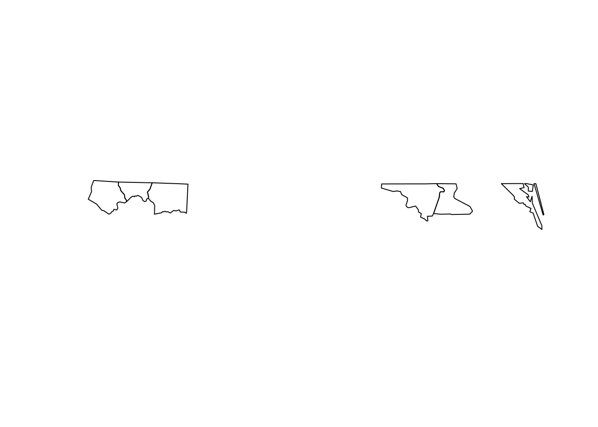

library(sf)
datos <- system.file("shape/nc.shp", package="sf") |>
st_read(quiet = TRUE) |> head(6)Generalidades de los datos geográficos
Unidad 1: Primeros pasos con SIG’s
Unidad 1
- Información geográfica Escalas
- Georreferencia
- Sistemas de referencia
- Sistemas de coordenadas
- Estructuras de datos.
- Tipos de datos geográficos
- Meta datos
- Fuentes de datos geográficos.
What is Quarto?
# Bloque 1
datos |> st_geometry() |> plot()
Quarto helps you have your ideas and your code in one place, and present it in a beautiful way.
Quarto unifies and extends the RMarkdown ecosystem - it unifies by combining the functionality of R Markdown, bookdown, distill, xaringian, etc into a single consistent system. And it extends in several ways: all features are possible beyond R too, including Python and Javascript. It also has more “guardrails”: accessibility and inclusion are centered in the design. Quarto is for people who love RMarkdown, and it’s for people who have never used RMarkdown.
The ability for Quarto to streamline collaboration has been so cool and important for our NASA Openscapes project. Quarto has been a common place for us to collaborate - across R and Python languages and coding expertise.
What is this tutorial?
This is a 1-hour tutorial that can be used to teach or as self-paced learning.
We introduce Quarto by exploring this tutorial website, and practicing the basic Quarto workflow using different tools (GitHub browser, RStudio, and Jupyter) for editing your website.
We’ll start off from the browser so you don’t need to install any additional software, however this approach is very limited and you will soon outgrow its capabilities. If you don’t already have a workflow to edit files and sync to GitHub from your computer, I recommend RStudio. You don’t need to know R to use RStudio, and it has powerful editor features that make for happy workflows.
Quarto.org is the go-to place for full documentation and more tutorials!
Example Quarto sites
A few Quarto websites from Openscapes - so far we have been using Quarto for documentation using Quarto and Markdown files and Jupyter Notebooks.
- Champions Lessons Series
- Openscapes Approach Guide
- 2021 NASA Cloud Hackathon
- Faylab Lab Manual
- A Quarto tip a day, by Mine Çetinkaya-Rundel
About
Openscapes is about better science for future us. We help researchers reimagine data analysis, develop modern skills that are of immediate value to them, and cultivate collaborative and inclusive research teams as part of the broader global open movement.
We’re developing this tutorial to help folks with different levels of technical skills use Quarto for documentation and tutorial building. This tutorial was originally created for several different audiences: NASA-Openscapes researcher support engineers using Python, communications directors at organizations promoting open science who do not identify as coders, and fisheries scientists curious about transitioning from RMarkdown. We’re hoping it’s useful to folks with backgrounds as wide as these; if you find it useful or have suggestions for improvement, please let us know by clicking “Edit this page” or “Report an issue” at the upper right side of any page.